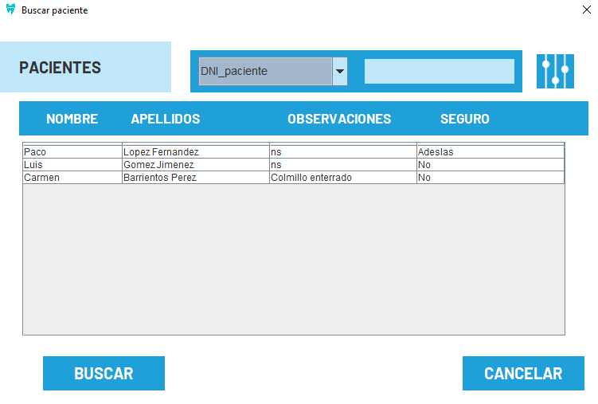
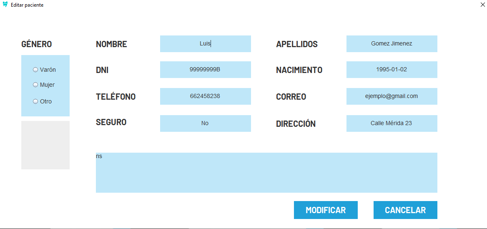
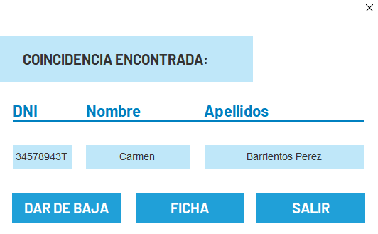
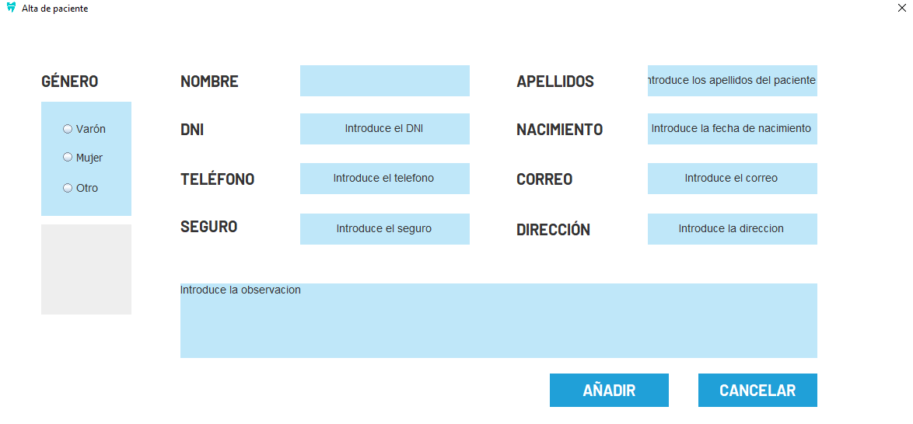

En esta ventana, podrá buscar pacientes, editarlos, darlos de baja y dar de alta a pacientes nuevos. Como administrador, usará una tabla para acceder a su información, ya sea para realizar búsquedas, editar la información de los mismos o para darlos de baja. A continuación se detalla información sobre estos procedimientos.
Como se especificaba en el apartado anterior, seleccionará la fila a buscar, apareciendo esta pantalla si lo insertó correctamente:
Tras esto, podrá acceder pulsando en los diferentes botones a toda la información del mismo:

Como se especificaba en el apartado anterior, seleccionará la fila a buscar, apareciendo esta pantalla si lo insertó correctamente:
Para dar la baja, es tan simple como buscar al paciente en la tabla, y pulsar en el campo dar baja:
Para dar de alta a un nuevo paciente, seguirá el mismo procedimiento que siguió al editarlo, solo que esta vez, se abrirá directamente la pantalla para introducir la información sobre el mismo
